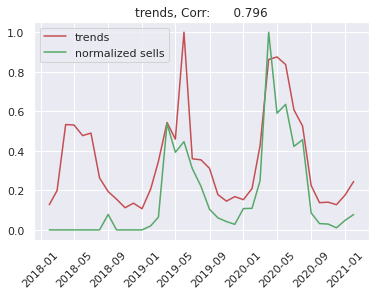
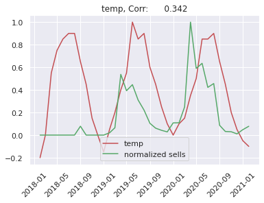
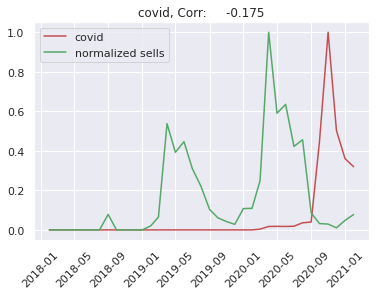
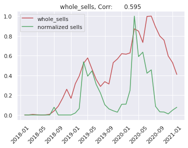

Chapter 5 Model for predicting future sales
For sales predicting we use Prophet, a tool developed by engineers from Facebook for time series forecasting. While it is a very powerful model there are no ready-to-go XAI techniques. We describe some of our proposals later.
We wondered what additional information could be useful in forecasting. We came up with this ideas:
Google trends - one can use Google trends to get the popularity of any given query made in google browser. We thought that this might be potentially useful. Our guess was that seeing increase in popularity of some products in Google one should expect increase in sales of these products.
Temperature - mean temperature in Poland in a given month. Restricting our interest only to Poland’s temperatures is valid since we only use products sold in Poland anyway. The reason behind using it is that the most seasonal products have the peak in their sales in spring and summer, as we could see in the previous section. They are frequently associated with outdoor activities. So can rising temperatures anticipate the boom in tents or garden chairs sales?
New cases of coronavirus - new cases of coronavirus in a given month in Poland. The pandemic undisputably affected a lot of different areas in our life. But it may be especially related to our shoping activites. Firstly, because large number of covid cases has been forcing stationary shops to be closed. It is clearly visible in Shumee data that their fast growth is even greater after March 2020. But secondly there is also a chance that the pandemic changed what people find valuable to buy and what they want to buy.
Total number of all sells of all products in a given month.
First of all it is worth taking a look at the correlation between the seasonal products and the proposed regressors. As an example we show correlation between sells of markiza and each individual reggresor:

We can see that Shumee fastly grows. So we will predict sells of a given product devided by total number of sells in a given month. Because trend of Shumee sells depends on many things like: business decisions, market competition and others. This is very difficult to predict by any artificial intelligence model, so we simplify our problem.
First problem which we met was: how to measure the model’s error? This problem appears because we build separate models for each product. We decided to split timeseries to train and test sets in a following way: train set contains data from 2018-02 to 2020-11 and test set contains 2020-12 to 2021-02. We train the FB Prophet model on the train dataset and we measure error on the test dataset using mean squared error metric.